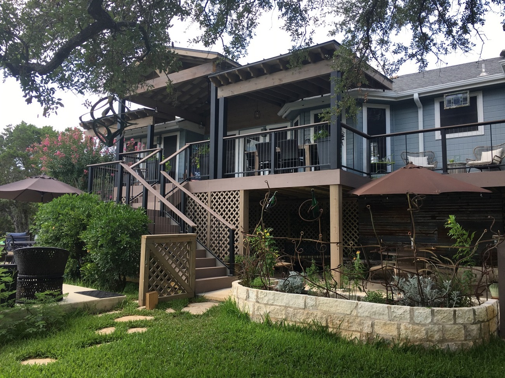
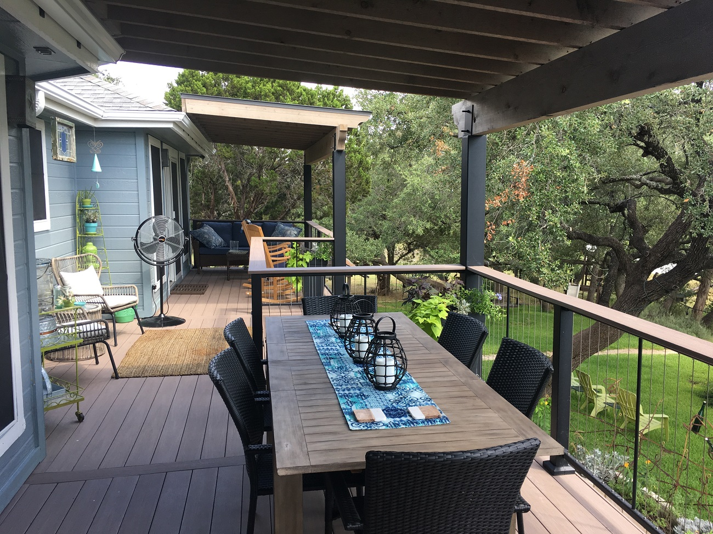
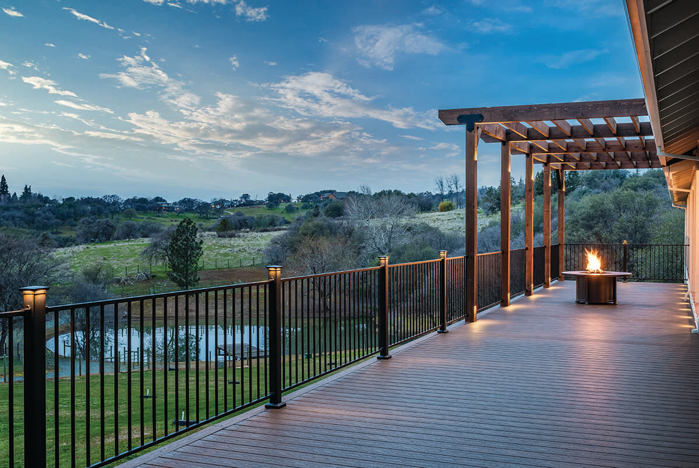
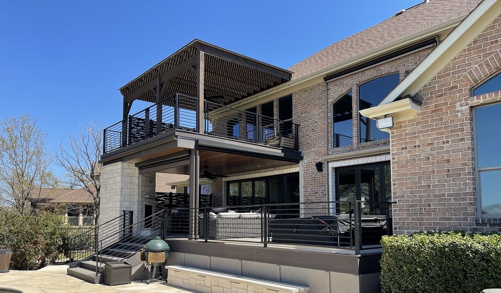
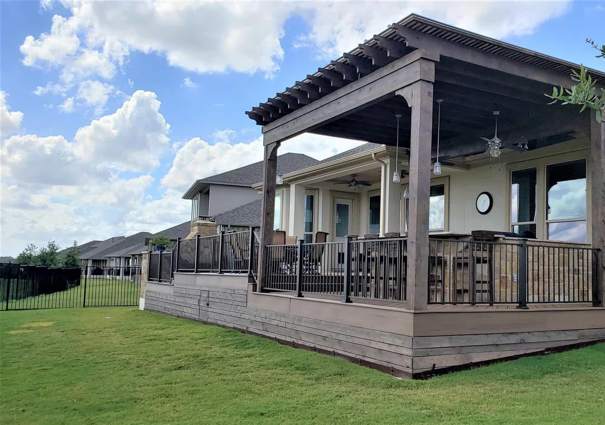

Custom Decks
Wood and composite decks designed around your home, your land, and the way you live outdoors.
Discuss your project →San Antonio, Texas
Built for you.
Purposeful outdoor spaces, designed around your home and built with craftsmanship you notice in every detail.
What We Build
Great outdoor living starts with understanding how you want to use the space. We pair thoughtful design with disciplined construction.
Wood and composite decks designed around your home, your land, and the way you live outdoors.
Discuss your project →Architectural shade structures that add comfort, proportion, and year-round usability.
Discuss your project →Repairs, resurfacing, railings, and structural upgrades that make an aging deck feel new.
Discuss your project →
The Way We Work
Beautiful results come from a clear process. You’ll know what’s happening, what comes next, and who to call.
We listen, measure, and study how your home and outdoor space work together.
You get a clear plan shaped around your style, priorities, and budget.
Our team manages every detail, from structure and finish to a clean walkthrough.
Step outside to a polished, durable space ready for everyday life.
Recent Inspiration



Why Homeowners Choose Us
Built for you.
We build with your home, your routines, and your future in mind—because the best outdoor spaces become part of everyday life.
Meet your builderEvery project is shaped around your property and priorities.
Clean transitions, aligned boards, sturdy structure, and polished finish work.
Honest updates and one accountable team from start to completion.
Material choices made for heat, sun, storms, and year-round living.

Proudly Local
Custom outdoor spaces throughout San Antonio and surrounding Hill Country communities.
Helpful Answers
Still have a question? Call us and tell us what you have in mind.
(210) 499-1547 →We build custom wood and composite decks, multi-level decks, pool decks, covered decks, and integrated outdoor living spaces.
Yes. We help shape the design and coordinate the permit process required for your project.
Timing depends on size, materials, permitting, and site conditions. We provide a clear schedule before construction begins.
Absolutely. We can assess the structure and recommend repairs, resurfacing, railing upgrades, or a complete rebuild.
Yes. Tell us about your project and we’ll arrange a complimentary consultation and estimate.
Your Backyard, Reimagined
Built for you.
Start with a free, no-pressure conversation about your outdoor space.